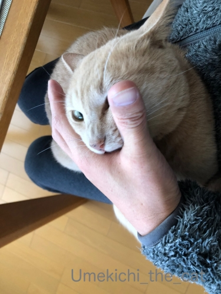
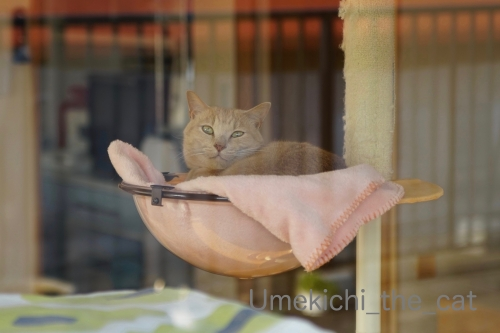
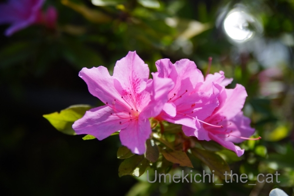
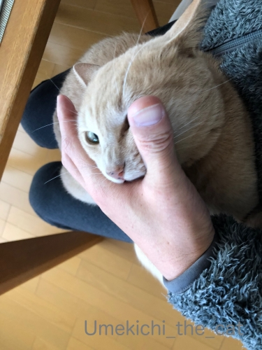
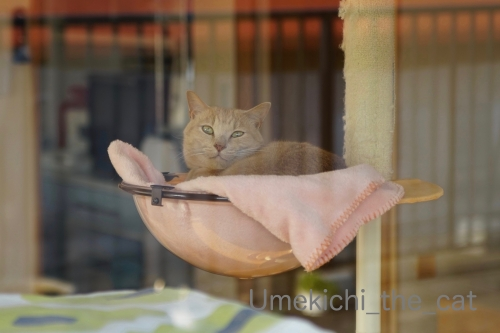
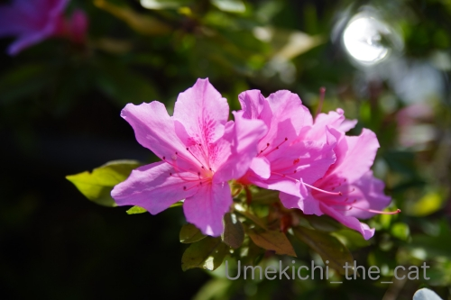

ニャンサムウェアは種を越えて [梅吉]
おっとのテレワークが始まって以降
我が家のニャンサムウェアは威力を増すばかり。

最初は可愛いふりしてるんですよ。
それが

正体を現した！！

恐ろしいですw
PC周辺でのみ猛威を振るうのかと思っていたら家の中あらゆるところで暴れている模様。
テレワーク合間のちょっとした休憩のストレッチすらもその対象で・・・・
（7秒 音は出ません＾＾）
もやは逃れようがない・・・・ (≧▽≦)
※もちろんじゃれているだけですよwww梅吉の愛情表現でーす( ´艸｀)
そしておっとはめっちゃ笑顔！！

休憩中のニャンサムウェア。
ベランダに出て家の中をパチリ。



つつじが見ごろを迎えつつありますね。

萌え始めのもみじが可愛いです＾＾
 ↑ガブッと一押し↑
↑ガブッと一押し↑
我が家のニャンサムウェアは威力を増すばかり。
最初は可愛いふりしてるんですよ。
それが
正体を現した！！

恐ろしいですw
PC周辺でのみ猛威を振るうのかと思っていたら家の中あらゆるところで暴れている模様。
テレワーク合間のちょっとした休憩のストレッチすらもその対象で・・・・
（7秒 音は出ません＾＾）
もやは逃れようがない・・・・ (≧▽≦)
※もちろんじゃれているだけですよwww梅吉の愛情表現でーす( ´艸｀)
そしておっとはめっちゃ笑顔！！

休憩中のニャンサムウェア。
ベランダに出て家の中をパチリ。

つつじが見ごろを迎えつつありますね。
萌え始めのもみじが可愛いです＾＾

カフェオレ色の梅吉

梅吉 2023年8月10日 永眠


梅吉と出会った譲渡会

犬猫の理由なき殺処分ゼロ
妄想広告
UMEKICHI 光

爆発的に早い！
時々攻撃的！
Thanks to Mr.Boss365
爆発的に早い！
時々攻撃的！
Thanks to Mr.Boss365

噛まれたり叩かれたり梅吉さんは嬉しそうだれど、夫様は散々ですね。
あ、夫様もそれが嬉しいのか~。
by zombiekong (2020-04-16 00:16)
１枚目からの２枚目の緩急がスゴイ・・・
もし知らずにこの顔されたら心折れそうです(笑)
ベランダに出てもしっかり監視されているのですね(^^♪
by yamatonosuke (2020-04-16 01:26)
梅吉さんは、テレワークのお手伝いをしたいのかも？（ﾟ□ﾟ）
by 英ちゃん (2020-04-16 01:46)
一緒に付いて出たいみたいで
しっかりチェックされますね＾＾
by ぽちの輔 (2020-04-16 06:26)
梅吉さんはお父さんが家にいてくれて嬉しいんですねぇ( ^ω^ )
ストレッチ、「おとうはん、ここまで前屈しなきゃ」って教えてくれてるのかな(⌒-⌒; )
うちはかみさんが先週から休業中でほぼ家にいるので
ニャンズがますますかみさんベッタリに・・・(-_-)
私のことは見向きもしません( ；´Д｀)
by ニッキー (2020-04-16 07:34)
連続写真が可愛すぎます～～～
我が家にもこんなストレッチ（鬼？）コーチを招へいしたいです！
by liang (2020-04-16 07:36)
梅吉さん♪テレワーク万歳！
夫さんは迷惑？？
でもお顔は見えませんが
なんとなく笑顔があふれているように
感じます(*´ω｀*)
by きぃ (2020-04-16 08:10)
梅吉さん、ストレッチするおとーさんのお顔をパンチしているように見えますが・・
爪はしまってなんちゃってパンチなのでしょうか。
そうでないとおとーさんのお顔はブラックジャックみたいになっちゃいますね。
にゃんサムウェアの脅威は何とか封じ込められそうですね。
クリアボウルからお外見物する梅吉さんを窓の外から(^^
猫は近眼だと聞きますが、おかーさんの姿が見えているのかしら。
つつじ、こちらもボチボチ咲き始めています。
桜も葉桜度が増してきましたが、まだ咲いてます。
by marimo (2020-04-16 08:52)
1枚目、カワイイお顔しちゃって～って思ったら、正体出しましたか(笑)
いや、それでこそ、梅吉さんですな。
おっとさんも家でのテレワークの疲れがさぞや吹き飛ぶことでしょう。
やっぱり、一家に一ニャン梅吉さんですねぇ。
もみじって秋に色づくのかと思ってたのですが、お散歩してたら真っ赤なもみじを何度か見かけました。ちょっとお勉強しないとなー。
by ChatBleu (2020-04-16 09:06)
こんにちは！
２枚目のお顔はとっても怖いです！
うちに来るニーナちゃんも窓越しに同じような
顔します！
by Take-Zee (2020-04-16 09:12)
こんにちは。
梅吉君、ニャンサムウェアのお仕事？犯罪？ご苦労様です。
２枚目のお顔、爪も出て良い感じです（爆）
動画、休憩のストレッチ時は「もう少し低く」の指導ですね。
ベランダからの長閑な風景、良いですね。
梅吉君も休憩中ですが「仕事しろ？」の表情です。
外出が減り、多少モヤモヤ感ありです。
今日は、ツツジを見に近くの公園を散歩する予定です。
ご主人さん、テレワークを踏ん張って下さい。梅吉君も！？(=^･ｪ･^=)
by Boss365 (2020-04-16 09:16)
梅吉さんストレッチの横で妨害工作ですね！
テレワークも色々大変ですね。
by ma2ma2 (2020-04-16 10:26)
2枚目写真の狂暴っぷりが凄い～～～～！
まさに「正体を現した～！」って感じっですわ。
在宅勤務のお家では、みなさんこんな様子なんでしょうかね(^_^;)
by よーちゃん (2020-04-16 11:45)
一枚目の写真は、ほんっとつぶらな瞳で可愛いのにｗｗ
梅吉くんの正体見たり！！！(笑)
うちは思ったほどニャンサムウェアしないのー。
相方くんが仕事部屋に籠もっちゃってるからなのね。
部屋のドアとリビングのドアのふたつが閉められているので
相方くんがいるということを、あおうみは忘れちゃうみたいです^^;
今も平和にソファーで寝てるわ^^;
わたしが仕事部屋に何かを取りに行って、そこで会話が聞こえようものなら、あおが飛んでくるけどｗｗ
by リュカ (2020-04-16 11:46)
一枚目のお写真、めっちゃかわいい～っと叫んだのもつかの間。
みるみる猛獣に変化する様子が最高です(#^^#)
ウチのは期待したほどの大活躍がなくて残念。
相方がパソコンに向かって喋りだすと怖がって逃げ出すようです。
クリアボウルの梅吉さんは一仕事終えたあとの充実感がいっぱいだ♪
あ、ウチのは前屈すると背中に飛び乗ります。
あれはストレッチを手伝ってくれていたのか？！(≧▽≦)
ツツジが鮮やかですね！
春から初夏の花がどんどん咲く楽しい季節なのに・・今年は近所の公園で我慢、我慢^^
by ゆきち (2020-04-16 12:15)
梅吉さん、2枚目の写真も可愛い＾＾。
ニャンサムウェア、猛威を振るってても、なぜか笑顔になりますね。
和むなぁ。 足が痺れてもいいから、ずっと膝の上にいてほしい。
白いツツジ、爽やか〜。 ツボミの頃の淡く黄緑がかった姿も魅力的です♪
by Inatimy (2020-04-16 18:44)
えっ、ひょっとして禁断の顔パンチ！？ ^^;
梅吉さん、嬉しくって仕方ないのでしょうね。
我が地方、桜がまだ咲いているところがあります。
あまり近くで見ないうちに散ってしまいそうです。
もうツツジの季節なのですね。
by yes_hama (2020-04-16 21:02)
梅吉さん、おとーさんの運動を手伝っているんじゃｗｗ
うちではわたしがスクワットしているとまぐろが「抱っこ
してくれ～」と甘えます。3.6㎏しかないので負荷にはか
なり軽すぎるけど多少は筋力アップに貢献してくれてるかも。
by mio (2020-04-16 21:46)
あれ？ 昼間書き込んだつもりだったのに…
宇宙船のまで見ていたりしたからかしら。
え～と、１枚目の梅吉さん、すごく可愛いー！
だんだん正体表してきた？
んふふ、おとーさんと遊んでるだけよね～～♪
私がヨーガのストレッチしていた時、猫が開脚の間に入ったり、頭をもたせて寝ちゃったりして、動けなくなったことがありました^^
まぶしい陽光にツツジが映えますね^^
by sana (2020-04-16 23:28)
ストレッチは「あそんでくれるの？」って思っちゃうのかな？
我が家では髪の毛を梳かしていると背中を駆け上がってきます
色とりどりのツツジでまた季節がひとつ進みますね
そろそろ初夏の陽気の日もありそうです
by 藤並 香衣 (2020-04-17 00:27)
うちの旦那もテレワーク中。いつも旦那不在時、彼の椅子を
自分のベッドにしているあずきに、膝に乗られてPC使いにくいわ
ちょっと席を立つと椅子取られるわで、椅子取りゲーム状態です(笑)
by でんさん (2020-04-17 01:09)
仕事の効率は上がらないかも。でも！心は癒されますね。
by ニコニコファイト (2020-04-17 06:56)
梅吉さん、お父さんに甘えっぱなしなんですね(^_^)
お父さんも内心ニコニコなのでは・・・。
でも、早くコロナ騒動が収まると良いですね。
by kou (2020-04-17 16:42)
顔めがけですか～？
なかなか迫力！
ベランダからの1枚
なんだかとても満足げな梅吉さんが
いい雰囲気で撮れてます^m^
by ふにゃいの (2020-04-17 19:34)
おぉ〜 梅吉ニャンサムウェア、炸裂してますにゃあ(^o^)
いつもいないお父ちゃんが居るというだけで、
テンションMAXになれるってスバラシイ〜♡
by のらん (2020-04-18 11:27)
私の会社も在宅勤務を進めています。
一部の人は、もう実行しています。
私もその準備だけはしています。
どうなるかまだ分かりませんが、もし在宅勤務になったら猫さんと一日一緒に仕事？ができます。
内心そうなって欲しいと念願しています＾＾
by riverwalk (2020-04-18 21:40)
なんてかわいいニャンサムウェア！！！
お目目くるくるでやる気に満ち溢れた表情ですね(≧∇≦)
油断大敵ですねー(･∀･；)
うちは年齢のせいか、思ったほどニャンサムウェアしませんw
寝ながら監視、でしょうかwww
ツツジも見頃ですよねー♪お花は癒されますね～☆
by カトリーヌ (2020-04-26 22:36)